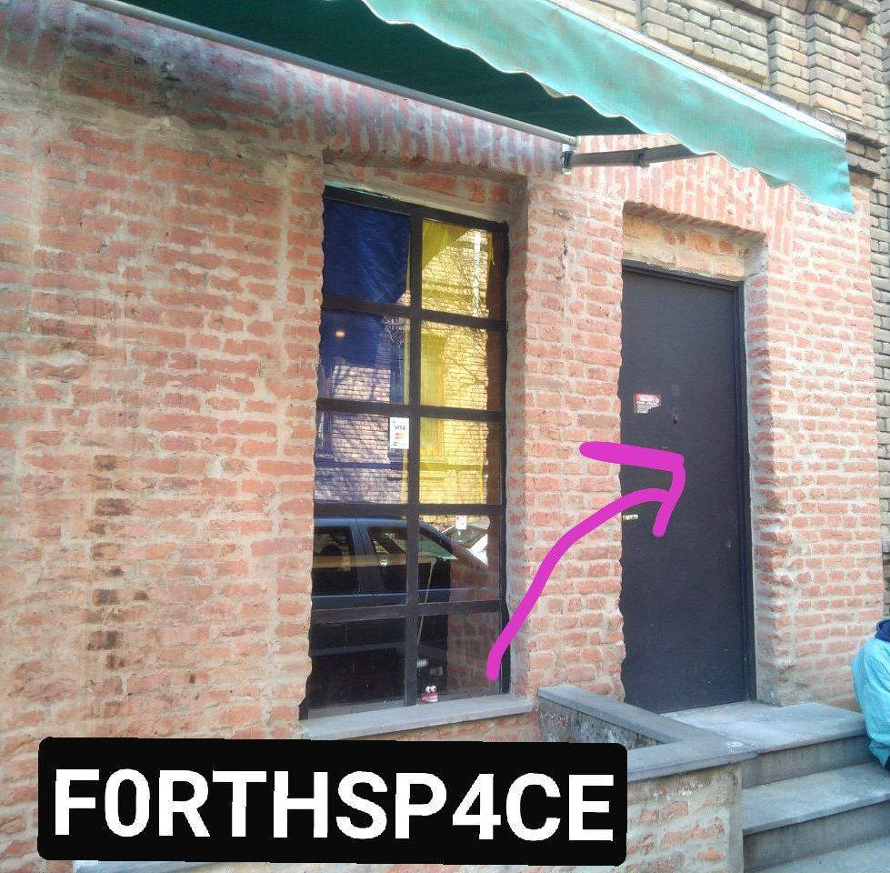

Tbilisi, Janashia st, 11/18 (Vake) (41.706632, 44.781503)
Yandex Maps,
OpenStreetMap

Come and visit - to talk, to see the space for yourself or maybe
even to ask for help. Different people find different modes of
communication preferrable, so you may also just visit and work on
your project uninterrupted or even just sit and read a book.
Residents are managing space in their free time on pure enthusiasm, we
have flat hierarchy and no administrators or managers. We like
guests, but we are ready to meet you only when we are ready. If
you want to plan a visit, please ping us in the
chat.
F0RTHSP4CE is not a secret club. If you share our
principles and want to do something - do it, become a resident.